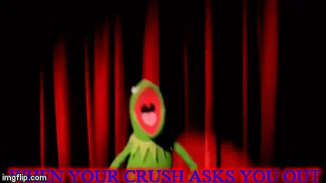
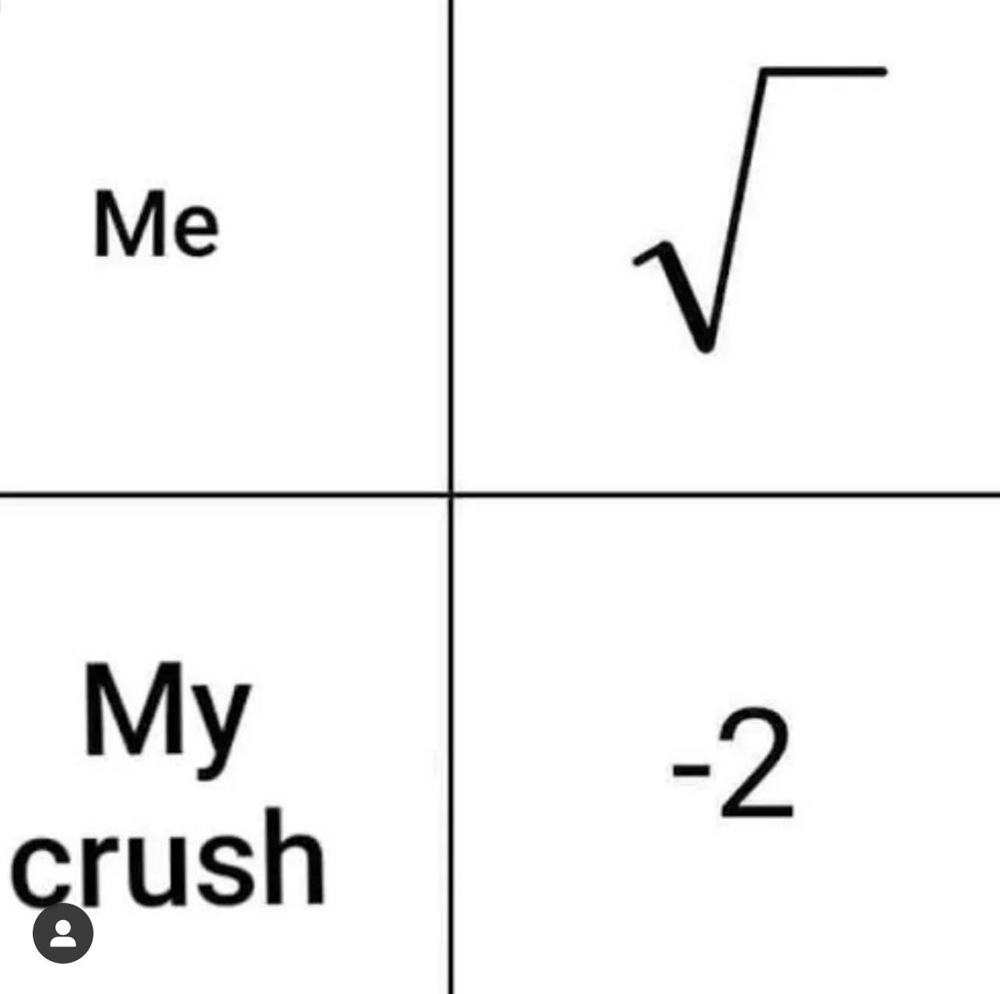

It is an indisputable and universally accepted truth that securing a girlfriend during one’s middle school years is not merely a social milestone, but an essential rite of passage without which the full spectrum of adolescent development cannot be properly achieved. The presence of a girlfriend at this pivotal stage is paramount for establishing one’s legitimacy among peers, ensuring the daily exchange of dramatically folded notes, and providing a critical training ground for navigating the complex world of human emotions through shared playlists and supervised group hangs at the mall. Indeed, to proceed through middle school without a girlfriend is to wander aimlessly through the halls of adolescence, devoid of purpose, prestige, or lunchtime table security. There are no downsides—only boundless benefits—ranging from minor fame in the group chat to the unparalleled honor of celebrating one-week anniversaries. In summary, a middle schooler without a girlfriend is like a pencil without lead: technically functional, but profoundly incomplete.
Step 1: Choosing Your Target
Take a moment to reflect on your personal feelings and identify someone you are genuinely drawn to on an emotional or romantic level. Recognizing a crush involves more than just fleeting attraction—it requires thoughtful consideration of the qualities, interactions, and emotional responses that make someone stand out to you. This process of introspection not only helps clarify your romantic interests but also encourages greater self-awareness and emotional maturity. By consciously acknowledging your feelings, you can better understand your own preferences and approach potential relationships with intention and confidence.
Step 2: Art of Flirting
The art of flirting is a subtle and playful form of communication that conveys interest, attraction, and charm in a respectful and engaging manner. It involves a combination of verbal cues, body language, eye contact, and confident demeanor, all aimed at creating a connection while maintaining authenticity. Effective flirting is less about rehearsed lines and more about genuine engagement—listening actively, responding with warmth, and expressing interest without pressure. Mastering this art requires emotional intelligence, self-awareness, and an understanding of social dynamics, making it not just a tool for romantic connection, but also a reflection of interpersonal skill and charisma.
Final Step: Ask Them Out!
Asking someone out is a confident and respectful step toward expressing your romantic interest and exploring the potential for a deeper connection. It involves clear and sincere communication, whether through a casual conversation, a thoughtful message, or a direct invitation to spend time together. The key is to be genuine, considerate of the other person’s comfort, and open to their response—whatever it may be. This moment doesn’t have to be elaborate; what matters most is your authenticity and willingness to take initiative. Regardless of the outcome, asking someone out reflects emotional maturity and the courage to pursue meaningful interactions.

Before and After
Asking someone out is a confident and respectful step toward expressing your romantic interest and exploring the potential for a deeper connection. It involves clear and sincere communication, whether through a casual conversation, a thoughtful message, or a direct invitation to spend time together. The key is to be genuine, considerate of the other person’s comfort, and open to their response—whatever it may be. This moment doesn’t have to be elaborate; what matters most is your authenticity and willingness to take initiative. Regardless of the outcome, asking someone out reflects emotional maturity and the courage to pursue meaningful interactions.
Before
After

Share With Friends!
Share this valuable, life changing, information with your deepest, dearest friends.